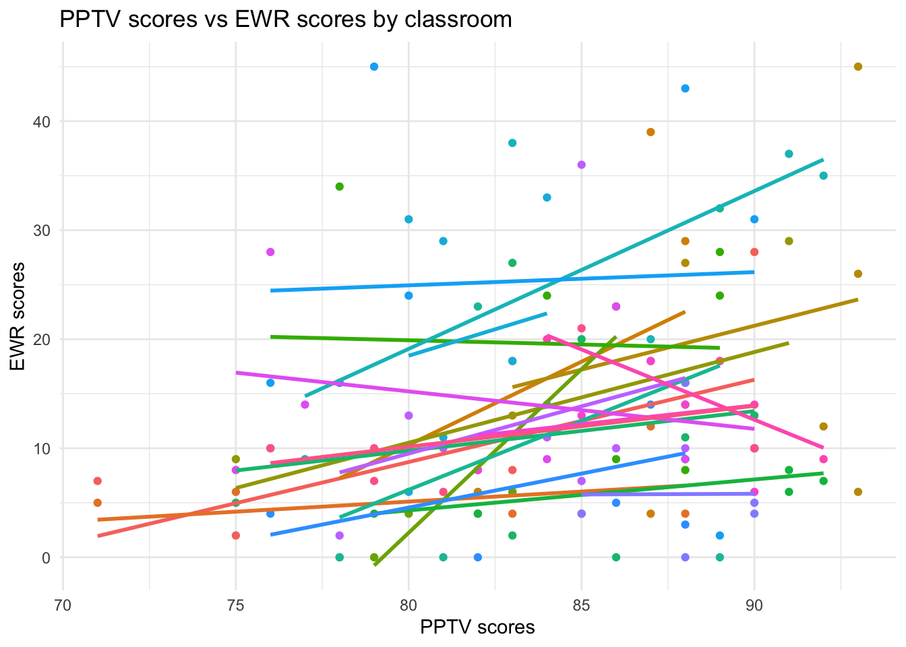
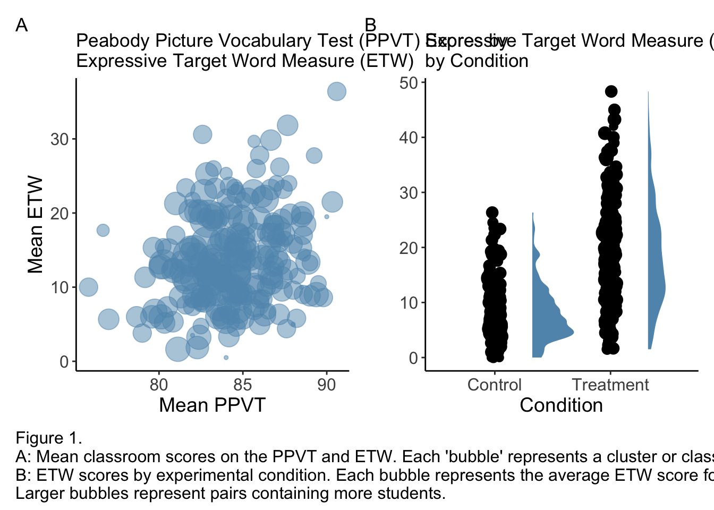
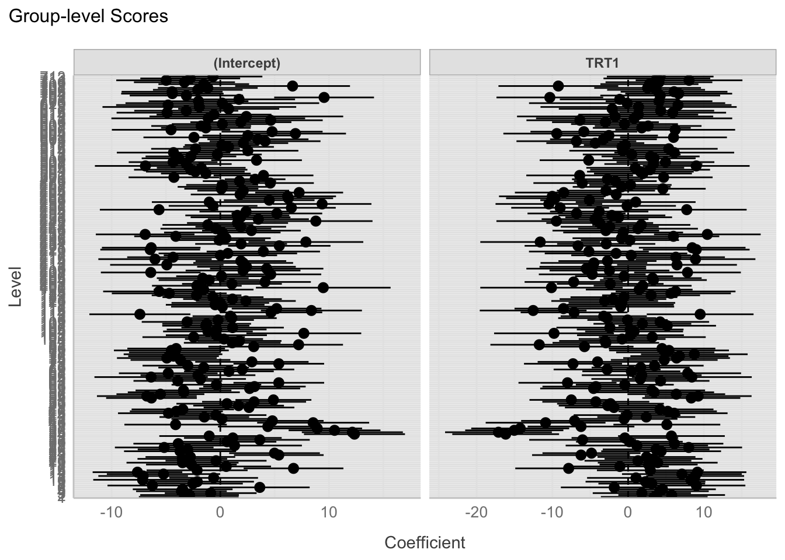
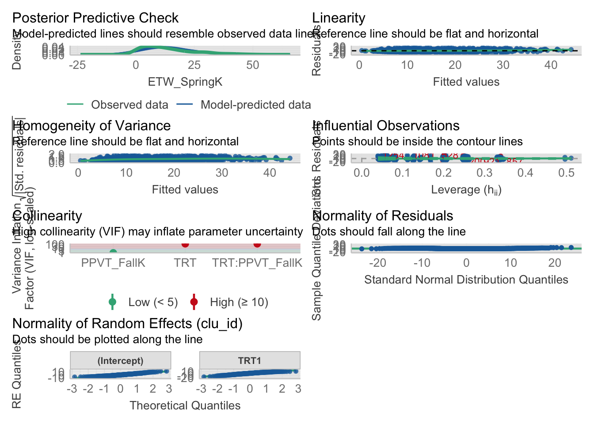
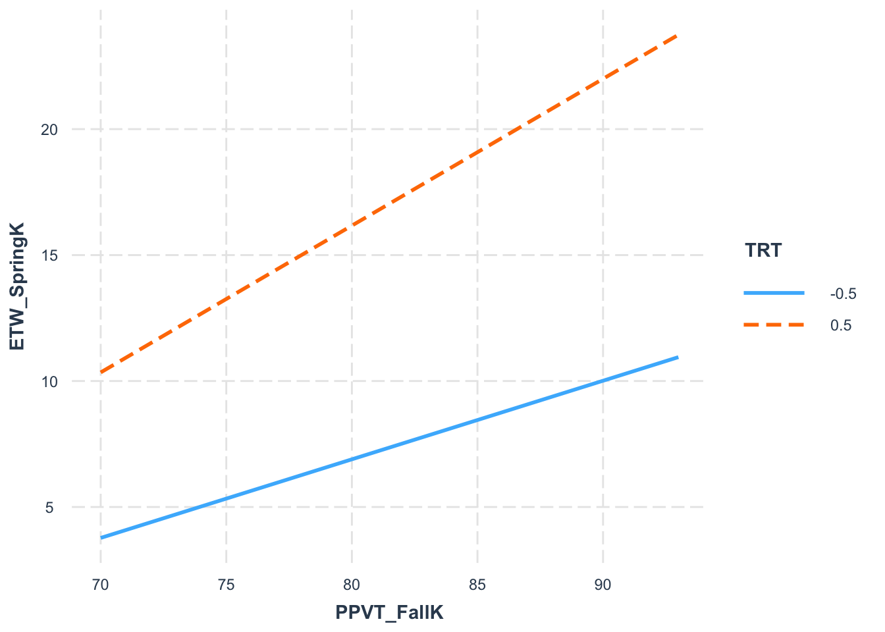

Today’s lab uses data from a study conducted by Coyne et al. (2019), which examined the impact of a high-quality, evidence-based vocabulary instruction intervention in kindergarten. The data consists of 1,428 students who were nested in 233 clusters or classrooms (clu_id).
In the sample of at-risk youth in the classroom (N = 6), half were allocated to treatment and the other half to control. The treatment group received supplemental small-group vocabulary instruction in addition to the whole-group instruction, while the control group received only whole-group vocabulary instruction. Since the observations were not independent (due to students being nested within classrooms), the researchers needed to account for this in their analysis.
The main question that the researchers aimed to answer was whether the supplemental small-group kindergarten vocabulary instruction intervention increased students’ knowledge of the vocabulary words taught in the intervention. To measure vocabulary knowledge, the researchers used an ETW (ETW_SpringK) assessment, which evaluated students’ ability to explain the meaning of a given word. The assessment was administered after the intervention concluded, in the spring of kindergarten. In the sample, ETW scores ranged from 0 to 52 (the maximum score), with a mean of 13.65 and a standard deviation of 11.10. To answer the research question, the researchers used two fixed effects and their interaction: TRT (1 = treatment and 0 = control) and PPVT (Peabody Picture Vocabulary Test, which measures students’ vocabulary before the intervention; PPVT_FallK).
Coyne, M. D., McCoach, D. B., Ware, S., Austin, C. R., Loftus-Rattan, S. M., & Baker, D. L. (2019). Racing Against the Vocabulary Gap: Matthew Effects in Early Vocabulary Instruction and Intervention. Exceptional Children, 85(2), 163–179. https://doi.org/10.1177/0014402918789162
Load packages
Code
# fill in packages you need as you go herelibrary(tidyverse) # data wranglinglibrary(knitr) # nice tableslibrary(patchwork) # combine figureslibrary(lme4) # fit mixed modelslibrary(lmerTest) # mixed modelslibrary(broom.mixed) # tidy output of mixed modelslibrary(afex) # fit mixed models for lrt testlibrary(emmeans) # marginal meanslibrary(ggeffects) # marginal meanslibrary(ggrain) # rain plotslibrary(easystats) # nice ecosystem of packageslibrary(interactions)
Load data
Code
# read in data filedata <-read.csv("Ch3_MLM_R.csv")
Lab 1
Data structure
Q1. What are the Level 1 and Level 2 variables in this study? How many units are in Level 1? Level 2? Are the fixed effects at Level 1 or Level 2?
Q2. What are the Level 1 and Level 2 variables in this study? How many units are in Level 1? Level 2? Are the fixed effects at Level 1 or Level 2?
Answers:
Level 1 variables: ETW_SpringK, TRT, and PPVT_FallK.
There are 1,427 units in Level 1. There are 222 units in Level 2.
The fixed effects are at Level 1 because they pertain to the individual student-level variables and their interactions.
Code
# Computing Dataset Statistics:# assuming 'data' is the dataframe and 'clu_id' identifies the clusters/classroomssummary_stats <- data %>%group_by(clu_id) %>%summarise(N_students =n()) %>%ungroup() %>%summarise(N_clusters =n(),Total_students =sum(N_students),Average_students_per_classroom =mean(N_students),SD_students_per_classroom =sd(N_students),Min_students_in_classroom =min(N_students),Max_students_in_classroom =max(N_students) )# Extracting the values to variables for easier printingn_clusters <- summary_stats$N_clusterstotal_students <- summary_stats$Total_studentsaverage_students <- summary_stats$Average_students_per_classroomsd_students <- summary_stats$SD_students_per_classroommin_students <- summary_stats$Min_students_in_classroommax_students <- summary_stats$Max_students_in_classroom
Code
cat("Number of clusters (classrooms):", n_clusters, "\n")
Number of clusters (classrooms): 222
Code
cat("Total number of students:", total_students, "\n")
Total number of students: 1427
Code
cat("Average number of students per classroom:", round(average_students, 1), "\n")
Average number of students per classroom: 6.4
Code
cat("Standard deviation of students per classroom:", round(sd_students, 1), "\n")
Standard deviation of students per classroom: 2.2
Code
cat("Minimum number of students in a classroom:", min_students, "\n")
Minimum number of students in a classroom: 2
Code
cat("Maximum number of students in a classroom:", max_students, "\n")
Maximum number of students in a classroom: 18
2. Deviation code (0.5, -0.5), aka effect code for the treatment variable
Note
NOTE: Deviation/Effect coding is one way to recode categorical variables for regression analysis. They transform the treatment variable (TRT) from: treatment → 0.5 control → -0.5
Remember that different ways of coding categorical variables do not actually influence the results/ predictions. But they can influence how we interpret coefficients.
Now, with deviation coding (-0.5,0.5), here: Intercept = grand mean across all groups Treatment coefficient = difference between groups (divided by 2)
With dummy coding (0/1), it’d be: Intercept = mean of reference group Treatment coefficient = difference from reference group
The key advantage? When interpreting interactions, deviation coding makes results more intuitive since coefficients show deviations from overall means (or overall main effect) rather than from a reference group (which may not always be clear or relevant, making interpretation harder) .
Code
#deviation code the TRT vardata <- data %>%mutate(TRT =ifelse(TRT ==1, 0.5, -0.5))# Note, one can also use contr.sum to instantiate such codings. # Contr.sum defaults to -1/1 coding (not 0,1).data$TRT <-factor(data$TRT)contrasts(data$TRT) <-contr.sum(2)/2
3. Group mean center PPVT_Fallk
Q3. Insert code below to center the variable PPVT_Fallk within the clusters/classrooms
Q4. Create two nicely looking visualizations: One for the relationship between PPTV and EWR and one for the relationship between TRT and EWR. Make sure you plot the between-cluster (class) variability when you graph these (given how many clusters there are, randomly sample 20 of them to plot).
AnswerS:
Code
# fig 1# Randomly sample 20 clusters to plotset.seed(500) # for reproducibilityclusters_sample <- data %>%distinct(clu_id) %>%mutate(clu_id =as.character(clu_id)) %>%sample_n(20) %>%pull(clu_id)data_sample <- data %>%filter(clu_id %in% clusters_sample)ggplot(data_sample, aes(x = PPVT_FallK, y = ETW_SpringK, group = clu_id)) +geom_point(aes(color =as.factor(clu_id))) +geom_smooth(method ="lm", se =FALSE, aes(group = clu_id, color =as.factor(clu_id))) +theme_minimal() +theme(legend.position ="none") +labs(title ="PPTV scores vs EWR scores by classroom", x ="PPTV scores", y ="EWR scores")
`geom_smooth()` using formula = 'y ~ x'

Code
# fig 2# bubble plots# PPVT_FallK and ETW_SpringKp1_df <- data %>%group_by(clu_id) %>%summarise(mean_PPVT_FallK =mean(PPVT_FallK, na.rm =TRUE),mean_ETW_SpringK =mean(ETW_SpringK, na.rm =TRUE),n_students =n())p1 =ggplot(p1_df, aes(x = mean_PPVT_FallK, y = mean_ETW_SpringK, size = n_students)) +geom_point(alpha = .5, color ="#6096ba") +scale_size_continuous(range =c(1, 12), guide ="none") +labs(title ="Peabody Picture Vocabulary Test (PPVT) Scores by\nExpressive Target Word Measure (ETW)",x ="Mean PPVT",y ="Mean ETW") +theme_classic() +theme(axis.title =element_text(size =14),axis.text =element_text(size =12) )# ETW_SpringK and TVTp2_df = data %>%group_by(clu_id, TRT) %>%summarise(mean_ETW_SpringK =mean(ETW_SpringK, na.rm =TRUE),n_students =n())
`summarise()` has grouped output by 'clu_id'. You can override using the
`.groups` argument.
Code
p2 =ggplot(p2_df, aes(x =factor(TRT), y = mean_ETW_SpringK)) + ggdist::stat_halfeye(adjust = .5,width = .4,.width =0,justification =-.9,point_colour =NA,fill ="#6096ba" ) +geom_point(aes(group =factor(clu_id), size = n_students), position =position_jitter(width =0.05)) +guides(size ="none") +labs(title ="Expressive Target Word Measure (ETW) Scores\nby Condition",x ="Condition",y ="") +scale_x_discrete(labels =c("Control", "Treatment")) +theme_classic() +theme(axis.title =element_text(size =14),axis.text =element_text(size =12) )combined_plot = p1 | p2caption_text ="Figure 1.\nA: Mean classroom scores on the PPVT and ETW. Each 'bubble' represents a cluster or classroom.\nB: ETW scores by experimental condition. Each bubble represents the average ETW score for a classroom.\nLarger bubbles represent pairs containing more students."annotated_plot = combined_plot &plot_annotation(tag_levels ="A",caption = caption_text,theme =theme(plot.caption =element_text(size =12, hjust =0) ) )annotated_plot

Model comparisons
Q5. Fit an unconditional means (null model), and print its summary
Tip
make sure you have loaded lmerTest to get p-values
When you load lmerTest, it modifies how summary() works on lmer models. This happens automatically, and there isn’t a specific new function you need to call.
Note
The “model” with linear regression sets the intercept to be mean The unconditional means “null model” ends up setting the group intercepts to group means. Neither of these models have slopes.
Null model in lm() — lm(Y ~ 1) Null model in lmer() — lm(Y ~ 1 + (1|grouping_factor))
REML (Restricted Maximum Likelihood) is better for variance estimation - and that’s exactly what null models are trying to do for the data without considering any fixed effect predictor. So, choose REML in your lmer call.
Linear mixed model fit by REML. t-tests use Satterthwaite's method [
lmerModLmerTest]
Formula: ETW_SpringK ~ 1 + (1 | clu_id)
Data: data
REML criterion at convergence: 10855.9
Scaled residuals:
Min 1Q Median 3Q Max
-1.8972 -0.6979 -0.2156 0.5325 3.5095
Random effects:
Groups Name Variance Std.Dev.
clu_id (Intercept) 19.91 4.462
Residual 104.43 10.219
Number of obs: 1427, groups: clu_id, 222
Fixed effects:
Estimate Std. Error df t value Pr(>|t|)
(Intercept) 13.7248 0.4094 201.4834 33.52 <2e-16 ***
---
Signif. codes: 0 '***' 0.001 '**' 0.01 '*' 0.05 '.' 0.1 ' ' 1
:::
Q6. The intraclass correlation coefficient (ICC) measures proportion of total variance due to group membership Calculate it manually for the fitted model from the output, and print it out. Is multilevel modeling warranted here?
Tip
A common heuristic: ICC < 0.05 = Probably not needed ICC > 0.05-0.1 = Multilevel warranted ICC > 0.1 = Strong indication for multilevel models.
Code
#TYPE YOUR CODE BELOW# a. Extract the variance components from the model output# b. Calculate ICC
Now use the icc function in easystats / performance package to calculate the icc
Answers:
Code
# Extract the variance components from the model outputcluster_variance <-19.91residual_variance <-104.43# Calculate ICCicc <- cluster_variance / (cluster_variance + residual_variance)round(icc, 4)
[1] 0.1601
Now use the icc function in easystats / performance package to calculate the icc
Is multilevel modeling warranted here? Yep! What does the ICC mean? It tells us how much variability there is between clusters. It also tells how how correlated our level 1 units are to one another. In this case, we have observe an ICC of 0.160, which indicates that 16% of the total variance in our outcome variable (students’ vocabulary knowledge scores ETW_SpringK) is attributable to differences between classroom (Level 2 variance).
Q7. Build up from the last model. Fit a model that includes all level 1 variables (no interaction)
Code
#Type your code here
Tip
Tip: You’re building from the last model. So you’re building on the clustering structure. So, you’d make sure to keep the random intercept intact.
Tip
Maximum likelihood (as opposed Restricted maximum likelihood is best once you begin to have fixed effects), so set your REML flag appropriately. By default it’s True.
Answer:
Code
level_1_model <-lmer(ETW_SpringK ~ TRT + PPVT_FallK + (1|clu_id), data = data)summary(level_1_model)
Linear mixed model fit by REML. t-tests use Satterthwaite's method [
lmerModLmerTest]
Formula: ETW_SpringK ~ TRT + PPVT_FallK + (1 | clu_id)
Data: data
REML criterion at convergence: 10349.1
Scaled residuals:
Min 1Q Median 3Q Max
-2.4814 -0.6259 -0.1126 0.5149 3.9787
Random effects:
Groups Name Variance Std.Dev.
clu_id (Intercept) 21.60 4.647
Residual 69.93 8.362
Number of obs: 1427, groups: clu_id, 222
Fixed effects:
Estimate Std. Error df t value Pr(>|t|)
(Intercept) -25.36477 3.95423 1398.06475 -6.415 1.93e-10 ***
TRT1 -10.44860 0.45197 1250.92144 -23.118 < 2e-16 ***
PPVT_FallK 0.46073 0.04665 1386.53447 9.876 < 2e-16 ***
---
Signif. codes: 0 '***' 0.001 '**' 0.01 '*' 0.05 '.' 0.1 ' ' 1
Correlation of Fixed Effects:
(Intr) TRT1
TRT1 0.022
PPVT_FallK -0.995 -0.020
Q8. Fit a model that includes the fixed interaction between the level-1 variables
Note
Note, in case you’re ever counfused about this in R formulas format Y ~ A + B + A:B (main effects + interaction term) is the same as Y ~ A*B
Answer:
Code
interaction_model <-lmer(ETW_SpringK ~ TRT * PPVT_FallK + (1|clu_id), data = data)summary(interaction_model)
Linear mixed model fit by REML. t-tests use Satterthwaite's method [
lmerModLmerTest]
Formula: ETW_SpringK ~ TRT * PPVT_FallK + (1 | clu_id)
Data: data
REML criterion at convergence: 10339.1
Scaled residuals:
Min 1Q Median 3Q Max
-2.6149 -0.6202 -0.1202 0.5219 4.1549
Random effects:
Groups Name Variance Std.Dev.
clu_id (Intercept) 21.66 4.655
Residual 69.25 8.322
Number of obs: 1427, groups: clu_id, 222
Fixed effects:
Estimate Std. Error df t value Pr(>|t|)
(Intercept) -25.30463 3.93672 1396.23692 -6.428 1.77e-10 ***
TRT1 16.10042 7.33721 1244.64814 2.194 0.0284 *
PPVT_FallK 0.46021 0.04644 1384.47854 9.909 < 2e-16 ***
TRT1:PPVT_FallK -0.31512 0.08693 1245.16529 -3.625 0.0003 ***
---
Signif. codes: 0 '***' 0.001 '**' 0.01 '*' 0.05 '.' 0.1 ' ' 1
Correlation of Fixed Effects:
(Intr) TRT1 PPVT_F
TRT1 0.005
PPVT_FallK -0.995 -0.004
TRT1:PPVT_F -0.004 -0.998 0.002
Q9. Compare the main effects and interaction models. Which model is the best? Try the likelihood ratio test, AIC and BIC, and jot down your thoughts.
Warning: model3 are not supported models and have been dropped.
# Likelihood-Ratio-Test (LRT) for Model Comparison (ML-estimator)
Name | Model | df | df_diff | Chi2 | p
--------------------------------------------------------
model1 | lmerModLmerTest | 5 | | |
model2 | lmerModLmerTest | 6 | 1 | 13.11 | < .001
Tip
AIC and BIC can be used with the models you’ve already fitted.
However, for likelihood ratio tests of nested models, Maximum likelihood (as opposed Restricted maximum likelihood) is best for model comparison. So such a likelihood ratio test will require models to be re-fit with REML=TRUE, just to give better model comparison results. )
Answer: - The interaction model is statistically superior to the main effects model, as indicated by lower AIC and BIC scores. This is further confirmed by a statistically significant likelihood ratio test (\(\chi^2 = 8.39, p = .0038\)). This suggests that including the interaction between TRT and PPVT_FallK provides a better fit to the data.
Q10. Use the best model from above and fit a model that adds random slopes for TRT
Answer:
Code
best_model <-lmer(ETW_SpringK ~ TRT * PPVT_FallK + (1+ TRT|clu_id), data = data)
Next, let’s create a model with a random slope for treatment and PPVT scores. This will be our maximal model.
Warning
We could include a random slope for the interaction between the two, but we only have 6 students per classroom and makes our model too complex.
Code
complex_model <-lmer(ETW_SpringK ~ TRT * PPVT_FallK + (1+ TRT + PPVT_FallK|clu_id), data = data)
Warning in checkConv(attr(opt, "derivs"), opt$par, ctrl = control$checkConv, :
Model failed to converge with max|grad| = 1.70299 (tol = 0.002, component 1)
Warning in checkConv(attr(opt, "derivs"), opt$par, ctrl = control$checkConv, : Model is nearly unidentifiable: very large eigenvalue
- Rescale variables?;Model is nearly unidentifiable: large eigenvalue ratio
- Rescale variables?
isSingular(complex_model)
[1] FALSE
Take a look at the maximal model output. What is the warning message? We observe that the more complex model has a singular fit, which likely results from overfitting the data. In particular, the more complex model contains random slopes for both TRT and PPVT_FallK within clusters (clu_id). We can infer that there is not enough variation in TRT or PPVT_FallK within clusters, so the model may not be able to estimate random effects reliably. To get rid of this warning, we could reduce complexity in the model by removing some of the random slopes.
Model interpretation
Through model comparisons like before, we can tell that the model with random slopes for TRT and random intercepts for classroom is the best. Now let’s use this best model and examine the fixed effects.
Q 11. Please interpret these effects/coefs in a sentence or two.
Code
# fit the best model and output a nice summary table of results.library(afex) # load afex inm <-mixed(ETW_SpringK ~ TRT * PPVT_FallK + (1+ TRT|clu_id), data=data)
Contrasts set to contr.sum for the following variables: TRT, clu_id
Numerical variables NOT centered on 0: PPVT_FallK
If in interactions, interpretation of lower order (e.g., main) effects difficult.
Q12. How do you interpet the modeling results, in terms of varaince in intercept, treatment effect, and residuals?
Answers: - The variance is 25.01 for the intercepts across the different classrooms (clu_id). This suggests there is substantial variability in the baseline ETW_SpringK scores that can be attributed to differences between classrooms before considering TRT or PPVT_FallK scores.
The variance associated with the treatment effect (TRT) across classrooms is 45.51. This suggests significant variability in how the treatment effect on ETW_SpringK scores differs from one classroom to another.
The variance of residuals is 57.02. This indicates the remaining within-classroom variance in student scores that cannot be explained by the model’s fixed effects or the classroom-level random effects.
Overall, our variance components are significant for both the random intercept and slope for TRT. This suggests that multilevel modeling is, indeed, appropriate and necessary to account for the clustering of student scores within classrooms and the variability in treatment effects across classrooms.
Model fit
We can then calculate the conditional and marginal pseudo-\(R^2\) of the model
The semi-\(R^2\) for the PPVT variable is calculated using the partR2 function from partR2 package
Code
library(partR2)partR2(best_model, data = data, partvars =c("PPVT_FallK"), R2_type ="marginal")
R2 (marginal) and 95% CI for the full model:
R2 CI_lower CI_upper nboot ndf
0.2619 NA NA 1 4
----------
Part (semi-partial) R2:
Predictor(s) R2 CI_lower CI_upper nboot ndf
Model 0.2619 NA NA 1 4
PPVT_FallK 0.0000 NA NA 1 4
We can visualize the random intercepts and slopes in your model
Code
random <-estimate_grouplevel(best_model)plot(random) +theme_lucid()

Assumptions
Q12. Check model assumptions with check_model. Do any of the assumptions appear to be violated?
Code
check_model(best_model)

Answer:
We can also visualize the interaction between TRT and PPVT score on ETW (I would check out the interactions or ggeffects packages. They have some nice features for plotting interactions.)
Code
interact_plot(best_model, pred ="PPVT_FallK", modx ="TRT", data = data)

Reporting Results
Q14. Briefly highlight what you think needs to be present in the results. I will share what a complete report would like in the solution.
Write-up the results of your MLM model incorporating the above information. This write-up should resemble what you would find in a published paper. You can use the textbook for guidance and the report function from easystats
The present study investigated the impact of a vocabulary instruction intervention on students’ knowledge, using a nested data structure with two levels: students (Level 1) nested within classrooms (Level 2). The analysis included 1,427 students distributed across 222 classrooms. Classrooms varied in size, with an average of approximately 6.4 students per classroom (\(SD = 2.2, range = [2, 18]\)).
The relationship between the intervention and vocabulary knowledge was modeled using a multilevel linear model, represented by the following equation:
where \(ETW\_SpringK\) is the student’s score on the vocabulary knowledge assessment, \(TRT\) is the treatment condition, \(PPVT\_FallK\) is the Peabody Picture Vocabulary Test score, and \((1 + TRT|clu\_id)\) represents the random intercepts and slopes for treatment across classrooms. Note that \(ETW\_SpringK\), \(TRT\), and \(PPVT\_FallK\) are all Level 1 variables, and \(clu\_id\) is at Level 2. For the above analysis, we mean centered \(PPVT\_FallK\) within each cluster and deviation coded \(TRT\).
Before settling on the above model, we estimated an unconditional means (null) model and maximal model, which included a random slope for both treatment and PPVT scores. We compared the above model (\(df = 8\)) to the maximal model (\(df = 11\)) using a likelihood ratio test from the easystats package (version 0.6.0). We found that the more complex model did not significantly improve model fit (\(\chi^2 = 4.85, p = 0.185\)). We therefore proceeded to use the simpler model for our analyses, as there was not sufficient evidence to justify additional complexity in our model.
We checked our model assumptions (linearity, normality of residuals, homoscedasticity, collinearity) visually, using diagnostic plots from the performance package (version 0.10.5). Based on this visual assessment, we found that all our model assumptions were satisfied. The Intraclass Correlation Coefficient (ICC) for the outcome variable was calculated as 0.16, suggesting that 16% of the variance in vocabulary knowledge scores could be attributed to differences between classrooms. The models were estimated using Restricted Maximum Likelihood (REML) to account for the nested data structure. The lme4 package (version 1.1.34) was used for fitting the model, with the interactions package (version 1.1.5) for estimating and plotting interactions.
The fixed effects analysis revealed a significant intercept (\(b = 13.47, SE = 0.40, t(209) = 34.03, p < .001\)), indicating a high baseline level of vocabulary knowledge. The treatment effect was also significant (\(b = 10.47, SE = 0.62, t(213) = 17.02, p < .001\)), suggesting that the treatment had a substantial positive impact on vocabulary knowledge. Additionally, PPVT scores were positively associated with ETW scores (\(b = 0.43, SE = 0.04, t(1091) = 9.67, p < .001\)), indicating that higher initial vocabulary levels were associated with higher post-intervention vocabulary knowledge. The interaction between treatment and PPVT scores was also significant (\(b = 0.28, SE = 0.09, t(1074) = 3.06, p = .002\)), suggesting that the treatment effect varied as a function of initial vocabulary levels.
Regarding random effects, we observe a variance of 25.01 (\(SD = 5.00\)) for the intercepts across the different classrooms. This suggests there is substantial variability in the baseline ETW scores that can be attributed to differences between classrooms before considering treatment or PPVT scores. The variance associated with the treatment effect (\(SD = 6.75\)). This suggests significant variability in how the treatment effect on ETW scores differs from across clasrooms. Finally, the variance of residuals was 57.02 (\(SD = 7.55\)), indicating within-classroom variance in student scores that cannot be explained by the model’s fixed effects or the classroom-level random effects. Overall, our variance components are significant for both the random intercept and slope for treatment. This suggests that multilevel modeling is, indeed, appropriate and necessary to account for the clustering of student scores within classrooms and the variability in treatment effects across classrooms.
the model estimated the standard deviation of the random intercepts for classrooms (\(SD = 5.00\)), indicating variability in baseline ETW scores across classrooms. The correlation between the random intercepts and slopes for treatment within classrooms was estimated to be 0.89, suggesting a strong positive relationship between the classroom baseline scores and the treatment effect. The standard deviation of the random slopes for treatment (\(SD = 6.75\)) indicated substantial variability in the treatment effect across classrooms. The residual standard deviation (\(SD = 7.55\)) reflected the within-classroom variability in ETW scores that was not explained by the model’s fixed and random effects.
Taken together, these results suggest that both the treatment and initial PPVT scores are significant predictors of students’ vocabulary knowledge. There was a notable interaction effect, suggesting that the benefit of the treatment varies depending on students’ initial vocabulary levels. The significant random effects for treatment across classrooms underscore the intervention’s differential effectiveness depending on classroom context. These findings highlight the importance of considering both the individual and contextual factors in educational interventions. ```
Source Code
---title: "MLM2 - Ans"subtitle: "Advanced Statistics in Psychology"format: html: toc: true theme: cosmo code-fold: true code-tools: trueeditor: markdown: wrap: 72---# Lab 1: MLMToday's lab uses data from a study conducted by Coyne et al. (2019),which examined the impact of a high-quality, evidence-based vocabularyinstruction intervention in kindergarten. The data consists of **1,428students** who were **nested in 233 clusters** or classrooms (`clu_id`).In the sample of at-risk youth in the classroom (N = 6), half wereallocated to **treatment** and the other half to **control**. Thetreatment group received supplemental small-group vocabulary instructionin addition to the whole-group instruction, while the control groupreceived only whole-group vocabulary instruction. Since the observationswere not independent (due to students being nested within classrooms),the researchers needed to account for this in their analysis.***The main question that the researchers aimed to answer was whetherthe supplemental small-group kindergarten vocabulary instructionintervention increased students' knowledge of the vocabulary wordstaught in the intervention.*** To measure vocabulary knowledge, theresearchers used an ETW (`ETW_SpringK`) assessment, which evaluatedstudents' ability to explain the meaning of a given word. The assessmentwas administered after the intervention concluded, in the spring ofkindergarten. In the sample, ETW scores ranged from 0 to 52 (the maximumscore), with a mean of 13.65 and a standard deviation of 11.10. Toanswer the research question, the researchers used two fixed effects andtheir interaction: TRT (1 = treatment and 0 = control) and PPVT (PeabodyPicture Vocabulary Test, which measures students' vocabulary before theintervention; `PPVT_FallK`).*Coyne, M. D., McCoach, D. B., Ware, S., Austin, C. R., Loftus-Rattan,S. M., & Baker, D. L. (2019). Racing Against the Vocabulary Gap: MatthewEffects in Early Vocabulary Instruction and Intervention. ExceptionalChildren*, 85(2), 163–179. <https://doi.org/10.1177/0014402918789162>## Load packages```{r message=FALSE, warning=FALSE}# fill in packages you need as you go herelibrary(tidyverse) # data wranglinglibrary(knitr) # nice tableslibrary(patchwork) # combine figureslibrary(lme4) # fit mixed modelslibrary(lmerTest) # mixed modelslibrary(broom.mixed) # tidy output of mixed modelslibrary(afex) # fit mixed models for lrt testlibrary(emmeans) # marginal meanslibrary(ggeffects) # marginal meanslibrary(ggrain) # rain plotslibrary(easystats) # nice ecosystem of packageslibrary(interactions)```## Load data```{r}# read in data filedata <-read.csv("Ch3_MLM_R.csv")```# Lab 1## Data structureQ1. What are the Level 1 and Level 2 variables in this study? How manyunits are in Level 1? Level 2? Are the fixed effects at Level 1 or Level2?Q2. What are the Level 1 and Level 2 variables in this study? How manyunits are in Level 1? Level 2? Are the fixed effects at Level 1 or Level2?[**Answers:**]{.underline}- [**Level 1 variables: `ETW_SpringK`, `TRT`, and`PPVT_FallK`.**]{.underline}- [**There are 1,427 units in Level 1. There are 222 units in Level 2.**]{.underline}- [**The fixed effects are at Level 1 because they pertain to the individual student-level variables and their interactions.**]{.underline}```{r}# Computing Dataset Statistics:# assuming 'data' is the dataframe and 'clu_id' identifies the clusters/classroomssummary_stats <- data %>%group_by(clu_id) %>%summarise(N_students =n()) %>%ungroup() %>%summarise(N_clusters =n(),Total_students =sum(N_students),Average_students_per_classroom =mean(N_students),SD_students_per_classroom =sd(N_students),Min_students_in_classroom =min(N_students),Max_students_in_classroom =max(N_students) )# Extracting the values to variables for easier printingn_clusters <- summary_stats$N_clusterstotal_students <- summary_stats$Total_studentsaverage_students <- summary_stats$Average_students_per_classroomsd_students <- summary_stats$SD_students_per_classroommin_students <- summary_stats$Min_students_in_classroommax_students <- summary_stats$Max_students_in_classroom``````{r}cat("Number of clusters (classrooms):", n_clusters, "\n")``````{r}cat("Total number of students:", total_students, "\n")``````{r}cat("Average number of students per classroom:", round(average_students, 1), "\n")``````{r}cat("Standard deviation of students per classroom:", round(sd_students, 1), "\n")``````{r}cat("Minimum number of students in a classroom:", min_students, "\n")``````{r}cat("Maximum number of students in a classroom:", max_students, "\n")```## 2. Deviation code (0.5, -0.5), aka effect code for the treatment variable::: callout-note**NOTE**: Deviation/Effect coding is one way to recode categoricalvariables for regression analysis. They transform the treatment variable(TRT) from: treatment → 0.5 control → -0.5Remember that different ways of coding categorical variables do notactually influence the results/ predictions. But they can influence howwe interpret coefficients.Now, with deviation coding (-0.5,0.5), here: Intercept = grand meanacross all groups Treatment coefficient = difference between groups(divided by 2)With dummy coding (0/1), it'd be: Intercept = mean of reference groupTreatment coefficient = difference from reference groupThe key advantage? When interpreting interactions, deviation codingmakes results more intuitive since coefficients show deviations fromoverall means (or overall main effect) rather than from a referencegroup (which may not always be clear or relevant, making interpretationharder) .:::```{r}#deviation code the TRT vardata <- data %>%mutate(TRT =ifelse(TRT ==1, 0.5, -0.5))# Note, one can also use contr.sum to instantiate such codings. # Contr.sum defaults to -1/1 coding (not 0,1).data$TRT <-factor(data$TRT)contrasts(data$TRT) <-contr.sum(2)/2```## 3. Group mean center `PPVT_Fallk`Q3. Insert code below to center the variable PPVT_Fallk within theclusters/classroomsAnswer:```{r}#within-clustering centeringdata$clu_id <-as.factor(data$clu_id)data <- data %>%group_by(clu_id) %>%mutate(PPVT_FallK_centered = PPVT_FallK -mean(PPVT_FallK, na.rm =TRUE)) %>%ungroup()```## VisualizationsQ4. Create two nicely looking visualizations: One for the relationshipbetween PPTV and EWR and one for the relationship between TRT and EWR.Make sure you plot the between-cluster (class) variability when yougraph these (given how many clusters there are, randomly sample 20 ofthem to plot).AnswerS:```{r}# fig 1# Randomly sample 20 clusters to plotset.seed(500) # for reproducibilityclusters_sample <- data %>%distinct(clu_id) %>%mutate(clu_id =as.character(clu_id)) %>%sample_n(20) %>%pull(clu_id)data_sample <- data %>%filter(clu_id %in% clusters_sample)ggplot(data_sample, aes(x = PPVT_FallK, y = ETW_SpringK, group = clu_id)) +geom_point(aes(color =as.factor(clu_id))) +geom_smooth(method ="lm", se =FALSE, aes(group = clu_id, color =as.factor(clu_id))) +theme_minimal() +theme(legend.position ="none") +labs(title ="PPTV scores vs EWR scores by classroom", x ="PPTV scores", y ="EWR scores")``````{r}# fig 2# bubble plots# PPVT_FallK and ETW_SpringKp1_df <- data %>%group_by(clu_id) %>%summarise(mean_PPVT_FallK =mean(PPVT_FallK, na.rm =TRUE),mean_ETW_SpringK =mean(ETW_SpringK, na.rm =TRUE),n_students =n())p1 =ggplot(p1_df, aes(x = mean_PPVT_FallK, y = mean_ETW_SpringK, size = n_students)) +geom_point(alpha = .5, color ="#6096ba") +scale_size_continuous(range =c(1, 12), guide ="none") +labs(title ="Peabody Picture Vocabulary Test (PPVT) Scores by\nExpressive Target Word Measure (ETW)",x ="Mean PPVT",y ="Mean ETW") +theme_classic() +theme(axis.title =element_text(size =14),axis.text =element_text(size =12) )# ETW_SpringK and TVTp2_df = data %>%group_by(clu_id, TRT) %>%summarise(mean_ETW_SpringK =mean(ETW_SpringK, na.rm =TRUE),n_students =n())p2 =ggplot(p2_df, aes(x =factor(TRT), y = mean_ETW_SpringK)) + ggdist::stat_halfeye(adjust = .5,width = .4,.width =0,justification =-.9,point_colour =NA,fill ="#6096ba" ) +geom_point(aes(group =factor(clu_id), size = n_students), position =position_jitter(width =0.05)) +guides(size ="none") +labs(title ="Expressive Target Word Measure (ETW) Scores\nby Condition",x ="Condition",y ="") +scale_x_discrete(labels =c("Control", "Treatment")) +theme_classic() +theme(axis.title =element_text(size =14),axis.text =element_text(size =12) )combined_plot = p1 | p2caption_text ="Figure 1.\nA: Mean classroom scores on the PPVT and ETW. Each 'bubble' represents a cluster or classroom.\nB: ETW scores by experimental condition. Each bubble represents the average ETW score for a classroom.\nLarger bubbles represent pairs containing more students."annotated_plot = combined_plot &plot_annotation(tag_levels ="A",caption = caption_text,theme =theme(plot.caption =element_text(size =12, hjust =0) ) )annotated_plot```## Model comparisonsQ5. Fit an unconditional means (null model), and print its summary::: callout-tipmake sure you have loaded `lmerTest` to get *p*-valuesWhen you load lmerTest, it modifies how summary() works on lmer models.This happens automatically, and there isn't a specific new function youneed to call.:::::: callout-noteThe "model" with linear regression sets the intercept to be mean Theunconditional means "null model" ends up setting the group intercepts togroup means. Neither of these models have slopes.Null model in lm() --- lm(Y \~ 1) Null model in lmer() --- lm(Y \~ 1 +(1\|grouping_factor))REML (Restricted Maximum Likelihood) is better for variance estimation -and that's exactly what null models are trying to do for the datawithout considering any fixed effect predictor. So, choose REML in yourlmer call.:::::: Answer. ::: cell```{r .cell-code}model1 <- lmer(ETW_SpringK ~ 1 + (1|clu_id), data = data)summary(model1)```:::Q6. The intraclass correlation coefficient (ICC) measures proportion oftotal variance due to group membership Calculate it manually for thefitted model from the output, and print it out. Is multilevel modelingwarranted here?::: callout-tipA common heuristic: ICC \< 0.05 = Probably not needed ICC \> 0.05-0.1 =Multilevel warranted ICC \> 0.1 = Strong indication for multilevelmodels.:::```{r}#TYPE YOUR CODE BELOW# a. Extract the variance components from the model output# b. Calculate ICC```Now use the `icc` function in easystats / performance package tocalculate the iccAnswers:```{r}# Extract the variance components from the model outputcluster_variance <-19.91residual_variance <-104.43# Calculate ICCicc <- cluster_variance / (cluster_variance + residual_variance)round(icc, 4)```Now use the `icc` function in easystats / performance package tocalculate the icc```{r}#easystatsperformance::icc(model1)```Is multilevel modeling warranted here? Yep! What does the ICC mean? Ittells us how much variability there is between clusters. It also tellshow how correlated our level 1 units are to one another. In this case,we have observe an ICC of 0.160, which indicates that 16% of the totalvariance in our outcome variable (students' vocabulary knowledge scores`ETW_SpringK`) is attributable to differences between classroom (Level 2variance).Q7. Build up from the last model. Fit a model that includes all level 1variables (no interaction)```{r}#Type your code here```::: callout-tipTip: You're building from the last model. So you're building on theclustering structure. So, you'd make sure to keep the random interceptintact.:::::: callout-tipMaximum likelihood (as opposed Restricted maximum likelihood is bestonce you begin to have fixed effects), so set your REML flagappropriately. By default it's True.:::Answer:```{r}level_1_model <-lmer(ETW_SpringK ~ TRT + PPVT_FallK + (1|clu_id), data = data)summary(level_1_model)```Q8. Fit a model that includes the fixed interaction between the level-1variables::: callout-noteNote, in case you're ever counfused about this in R formulas format Y \~A + B + A:B (main effects + interaction term) is the same as Y \~ A\*B:::Answer:```{r}interaction_model <-lmer(ETW_SpringK ~ TRT * PPVT_FallK + (1|clu_id), data = data)summary(interaction_model)```Q9. Compare the main effects and interaction models. Which model is thebest? Try the likelihood ratio test, AIC and BIC, and jot down yourthoughts.Answer:```{r}test_likelihoodratio(level_1_model, interaction_model, REML=FALSE)```::: callout-tipAIC and BIC can be used with the models you've already fitted.However, for likelihood ratio tests of nested models, Maximum likelihood(as opposed Restricted maximum likelihood) is best for model comparison.So such a likelihood ratio test will require models to be re-fit withREML=TRUE, just to give better model comparison results. ):::Answer: - The interaction model is statistically superior to the maineffects model, as indicated by lower AIC and BIC scores. This is furtherconfirmed by a statistically significant likelihood ratio test($\chi^2 = 8.39, p = .0038$). This suggests that including theinteraction between `TRT` and `PPVT_FallK` provides a better fit to thedata.Q10. Use the best model from above and fit a model that adds randomslopes for `TRT`Answer:```{r}best_model <-lmer(ETW_SpringK ~ TRT * PPVT_FallK + (1+ TRT|clu_id), data = data)```Next, let's create a model with a random slope for treatment and PPVTscores. This will be our maximal model.::: callout-warningWe could include a random slope for the interaction between the two, butwe only have 6 students per classroom and makes our model too complex.:::```{r}complex_model <-lmer(ETW_SpringK ~ TRT * PPVT_FallK + (1+ TRT + PPVT_FallK|clu_id), data = data)``````{r}#| code-fold: falseisSingular(complex_model)```Take a look at the maximal model output. What is the warning message? Weobserve that the more complex model has a singular fit, which likelyresults from overfitting the data. In particular, the more complex modelcontains random slopes for both `TRT` and `PPVT_FallK` within clusters(`clu_id`). We can infer that there is not enough variation in `TRT` or`PPVT_FallK` within clusters, so the model may not be able to estimaterandom effects reliably. To get rid of this warning, we could reducecomplexity in the model by removing some of the random slopes.## Model interpretationThrough model comparisons like before, we can tell that the model withrandom slopes for TRT and random intercepts for classroom is the best.Now let's use this best model and examine the fixed effects.Q 11. Please interpret these effects/coefs in a sentence or two.```{r}# fit the best model and output a nice summary table of results.library(afex) # load afex inm <-mixed(ETW_SpringK ~ TRT * PPVT_FallK + (1+ TRT|clu_id), data=data)nice(m) %>%kable()``````{r}emtrends(best_model, ~TRT, var="PPVT_FallK") %>%test() %>%kable()```Let's evaluate the variance components of the model.```{r}model_parameters(best_model, effects="random") %>%kable()```Q12. How do you interpet the modeling results, in terms of varaince inintercept, treatment effect, and residuals?Answers: - The variance is 25.01 for the intercepts across the differentclassrooms (`clu_id`). This suggests there is substantial variability inthe baseline `ETW_SpringK` scores that can be attributed to differencesbetween classrooms before considering `TRT` or `PPVT_FallK` scores.- The variance associated with the treatment effect (`TRT`) across classrooms is 45.51. This suggests significant variability in how the treatment effect on `ETW_SpringK` scores differs from one classroom to another.- The variance of residuals is 57.02. This indicates the remaining within-classroom variance in student scores that cannot be explained by the model's fixed effects or the classroom-level random effects.- Overall, our variance components are significant for both the random intercept and slope for `TRT`. This suggests that multilevel modeling is, indeed, appropriate and necessary to account for the clustering of student scores within classrooms and the variability in treatment effects across classrooms.## Model fitWe can then calculate the conditional and marginal pseudo-$R^2$ of themodel```{r}r2(best_model)```The semi-$R^2$ for the `PPVT` variable is calculated using the `partR2`function from `partR2` package```{r}library(partR2)partR2(best_model, data = data, partvars =c("PPVT_FallK"), R2_type ="marginal")```We can visualize the random intercepts and slopes in your model```{r}random <-estimate_grouplevel(best_model)plot(random) +theme_lucid()```## AssumptionsQ12. Check model assumptions with `check_model`. Do any of theassumptions appear to be violated?```{r}check_model(best_model)```Answer:We can also visualize the interaction between `TRT` and `PPVT` score onETW (I would check out the `interactions` or `ggeffects` packages. Theyhave some nice features for plotting interactions.)```{r}interact_plot(best_model, pred ="PPVT_FallK", modx ="TRT", data = data)```## Reporting ResultsQ14. Briefly highlight what you think needs to be present in theresults. I will share what a complete report would like in the solution.Write-up the results of your MLM model incorporating the aboveinformation. This write-up should resemble what you would find in apublished paper. You can use the textbook for guidance and the `report`function from `easystats`The present study investigated the impact of a vocabulary instructionintervention on students' knowledge, using a nested data structure withtwo levels: students (Level 1) nested within classrooms (Level 2). Theanalysis included 1,427 students distributed across 222 classrooms.Classrooms varied in size, with an average of approximately 6.4 studentsper classroom ($SD = 2.2, range = [2, 18]$).The relationship between the intervention and vocabulary knowledge wasmodeled using a multilevel linear model, represented by the followingequation:```{r}equatiomatic::extract_eq(best_model)```where $ETW\_SpringK$ is the student's score on the vocabulary knowledgeassessment, $TRT$ is the treatment condition, $PPVT\_FallK$ is thePeabody Picture Vocabulary Test score, and $(1 + TRT|clu\_id)$represents the random intercepts and slopes for treatment acrossclassrooms. Note that $ETW\_SpringK$, $TRT$, and $PPVT\_FallK$ are allLevel 1 variables, and $clu\_id$ is at Level 2. For the above analysis,we mean centered $PPVT\_FallK$ within each cluster and deviation coded$TRT$.Before settling on the above model, we estimated an unconditional means(null) model and maximal model, which included a random slope for bothtreatment and PPVT scores. We compared the above model ($df = 8$) to themaximal model ($df = 11$) using a likelihood ratio test from theeasystats package (version 0.6.0). We found that the more complex modeldid not significantly improve model fit ($\chi^2 = 4.85, p = 0.185$). Wetherefore proceeded to use the simpler model for our analyses, as therewas not sufficient evidence to justify additional complexity in ourmodel.We checked our model assumptions (linearity, normality of residuals,homoscedasticity, collinearity) visually, using diagnostic plots fromthe performance package (version 0.10.5). Based on this visualassessment, we found that all our model assumptions were satisfied. TheIntraclass Correlation Coefficient (ICC) for the outcome variable wascalculated as 0.16, suggesting that 16% of the variance in vocabularyknowledge scores could be attributed to differences between classrooms.The models were estimated using Restricted Maximum Likelihood (REML) toaccount for the nested data structure. The lme4 package (version 1.1.34)was used for fitting the model, with the interactions package (version1.1.5) for estimating and plotting interactions.The fixed effects analysis revealed a significant intercept($b = 13.47, SE = 0.40, t(209) = 34.03, p < .001$), indicating a highbaseline level of vocabulary knowledge. The treatment effect was alsosignificant ($b = 10.47, SE = 0.62, t(213) = 17.02, p < .001$),suggesting that the treatment had a substantial positive impact onvocabulary knowledge. Additionally, PPVT scores were positivelyassociated with ETW scores($b = 0.43, SE = 0.04, t(1091) = 9.67, p < .001$), indicating thathigher initial vocabulary levels were associated with higherpost-intervention vocabulary knowledge. The interaction betweentreatment and PPVT scores was also significant($b = 0.28, SE = 0.09, t(1074) = 3.06, p = .002$), suggesting that thetreatment effect varied as a function of initial vocabulary levels.Regarding random effects, we observe a variance of 25.01 ($SD = 5.00$)for the intercepts across the different classrooms. This suggests thereis substantial variability in the baseline ETW scores that can beattributed to differences between classrooms before consideringtreatment or PPVT scores. The variance associated with the treatmenteffect ($SD = 6.75$). This suggests significant variability in how thetreatment effect on ETW scores differs from across clasrooms. Finally,the variance of residuals was 57.02 ($SD = 7.55$), indicatingwithin-classroom variance in student scores that cannot be explained bythe model's fixed effects or the classroom-level random effects.Overall, our variance components are significant for both the randomintercept and slope for treatment. This suggests that multilevelmodeling is, indeed, appropriate and necessary to account for theclustering of student scores within classrooms and the variability intreatment effects across classrooms.the model estimated the standard deviation of the random intercepts forclassrooms ($SD = 5.00$), indicating variability in baseline ETW scoresacross classrooms. The correlation between the random intercepts andslopes for treatment within classrooms was estimated to be 0.89,suggesting a strong positive relationship between the classroom baselinescores and the treatment effect. The standard deviation of the randomslopes for treatment ($SD = 6.75$) indicated substantial variability inthe treatment effect across classrooms. The residual standard deviation($SD = 7.55$) reflected the within-classroom variability in ETW scoresthat was not explained by the model's fixed and random effects.Taken together, these results suggest that both the treatment andinitial PPVT scores are significant predictors of students' vocabularyknowledge. There was a notable interaction effect, suggesting that thebenefit of the treatment varies depending on students' initialvocabulary levels. The significant random effects for treatment acrossclassrooms underscore the intervention's differential effectivenessdepending on classroom context. These findings highlight the importanceof considering both the individual and contextual factors in educationalinterventions. \`\`\`